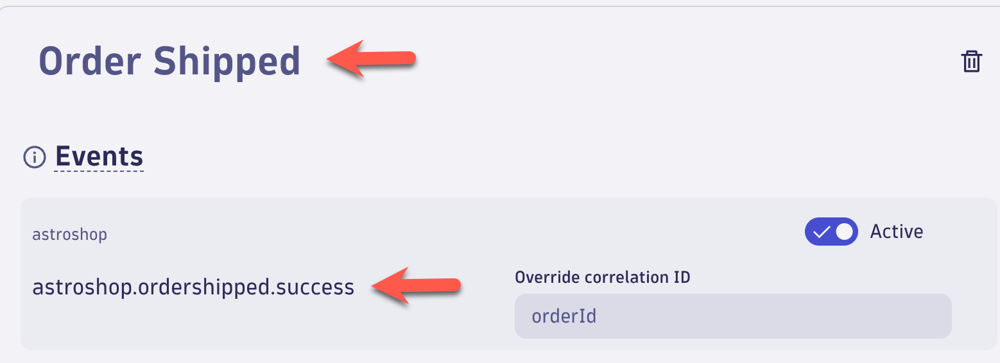

Business Events - Business Flow#
IT teams and business owners can use Business Flow Business Flow App to monitor and analyze critical business process flows. You can track end-to-end process delays, detect process anomalies, and report business key performance indicators (KPIs).
With Business Flow App, you can:
- Report business process KPIs, including flows completed (conversions), average flow completion time, business exceptions, and a business KPI of your choice
- Visualize and analyze individual process flows from start to finish
- Detect and explore uncompleted or dropped process flows to determine the cause, such as an IT error, a business exception, or abnormal inter-step transit time
- Visualize process errors and business exceptions at each step
Business Flow#
In this section of the lab we will create a Business Flow using the Business Events we have defined for the Astroshop Order to Shipped business process.
Business Flow - Order to Shipped - Configuration Name#
Launch the Business Flow app.
Select + Business Flow to get to the configuration page.
Select the Pencil icon at the top left and rename the Configuration using the following:
Name:
Astroshop - Order to Shipped
Select the Save button.
Business Flow - Place Order Step#
For Step 1 configuration use the following:
Name - (click the Step 1 box to edit):
Place Order
Drop-down event box:
astroshop.placeorder.success
After picking astroshop.placeorder.success, the Place Order step should look like this below:
Business Flow - Fraud Check Step#
Click the Place Order step.
Select the + button on the bottom.
This will add a new step under the Place Order called Step 2.
For Step 2 configuration use the following:
Name - (click the Step 2 box to edit):
Fraud Check
Drop-down event box:
astroshop.fraudcheck.success
After picking astroshop.fraudcheck.success, the Fraud Check step should look like this below:
Business Flow - Order Shipped Step#
Click the Fraud Check step.
Select the + button on the bottom.
This will add a new step under the Fraud Check called Step 3.
For Step 3 configuration use the following:
Name - (click the Step 3 box to edit):
Order Shipped
Drop-down event box:
astroshop.ordershipped.success
After picking astroshop.ordershipped.success, the Order Shipped step should look like this below:

Business Flow - Correlation ID#
In the Global settings section use the following for the Correlation ID field:
orderId
Business Flow - KPI#
For the KPI is extracted from the event to calculate revenue field, use the following:
Mapping event dropdown list pick:
astroshop.placeorder.success
Mapping attribute from event dropdown list pick:
revenue
Business Flow - Validate & Save#
Select the Validate & Save button at the top right of the screen.
Business Flow - View flow#
Select the View flow button at the top right of the screen.
Conclusion#
We have completed the Business Flow configuration for the Astroshop Order to Shipped business process. The next section will validate the data.
Data Validation#
In this section of the lab we will validate the data for the Business Flow for the Astroshop Order to Shipped business process.
Business Flow App#
Business processes are the automation backbone of modern businesses, and they must operate efficiently to meet business goals. Most of those processes can impact customer experience, either positively or negatively.
Most organizations rely on hundreds, if not thousands, of business processes, from procurement to order fulfillment. These processes depend on your IT systems to achieve their goals efficiently and at scale. The Business Flow app makes it easier than ever to monitor complex business processes.
Reported KPIs#
In the Business Flow App, top section we should have data for the following:
- Revenue - Business performance indicator (by default, revenue)
- Conversions - Fulfillment or conversion of unique flows in the business process
- Avg. Duration - Average flow duration (the time from start to end of a business process)
Tree View#
The Tree view displays all steps with the corresponding numbers of unique flows at each step. If you have defined business exceptions, the number of exceptions is displayed for each relevant step. We should have data for the following:
- Unique Flows for each Step
- Drops - A drop is an incomplete business process that fails to reach the next step due to an IT error, a business exception, or an above-average delay. It is also referred to as dropped flow
- Inflights - An inflight flow refers to a unique business process flow that is in progress at a given step. It remains inflight unless it exceeds the average delay for that step, at which point it is considered a dropped flow (drop).
- Avg. Duration between each step
Flow details#
On the side panel, expand the dropdown menu to see a list of completed unique flows that have reached that step. For any of the listed flows, select the magnifying glass icon (under Actions in the rightmost side panel) to explore the end-to-end business flow details.
Conclusion#
We have completed data validation for the Astroshop Order to Shipped Business Flow.
Business Flow Alerting#
The Business Flow app includes Davis Anomaly Detectors for the following:
- Business KPIs
- Conversions/Fulfilment
- Errors/Business Exceptions
- Avg duration
Davis Anomaly Detectors are created from Business Flow app which will generate Davis events that will derive in Davis Problems, appearing in the Problems app.
This feature uses a sliding window of 60 minutes, and analyzer is triggered every minute.
In this section of the lab, using the Business Flow app, we will enable Davis anomaly detection for Avg. duration for the Astroshop Order to Shipped business process.
Business Flow - Astroshop - Order to Shipped - Davis Alert#
Using the Business Flow app, Open the Astroshop - Order to Shipped Business Flow
At the top of the screen in the KPIs overview, click the Avg. Duration link.
The KPIs over time screen will appear.
Find the Avg. duration section, bottom of the screen.
In the chart section for the Avg. duration click the bell icon next to the chart, it will be on the right side.
The Configure Davis anomaly detection for Avg. duration screen will appear.
In the Analyzers section, confirm the setting selected is the following:
Static threshold is anomaly detection
Please use the following value in the Threshold field:
60,000,000,000
In the Alert condition confirm the setting selected is the following:
Alert if metric is above
Click the Save button.

Conclusion#
We have completed configuration for the Business Flow Davis Anomaly Detector for Avg. duration greater than 1 second for the Astroshop - Order to Shipped Business Flow. We set this value to low for the lab exercise so a Problem will be generated. The next section will validate the data.
Data Validation#
In this section of the lab we will validate the data Business Flow Davis Anomaly Detector for Avg. duration greater than 1 second for the Astroshop - Order to Shipped Business Flow.
Problems App#
Open the Problems App.
A new problem will be generated called Business Flow Astroshop - Order to Shipped - Avg. duration.
This might take 5-10 minutes. We can come back and check after the next lab.
Click the Business Flow Astroshop - Order to Shipped - Avg. duration which will open the Problem details screen.

Conclusion#
We have completed data validation for the Business Flow Davis Anomaly Detector for Avg. duration.
Continue#
In the next section, we'll learn how to use a Business Observability Dashboard to support customers.